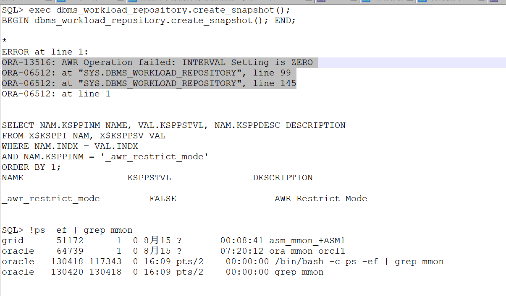
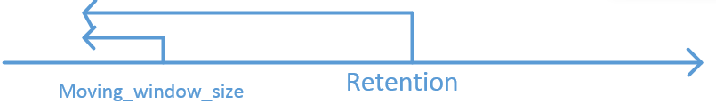

背景1
- 生成快照时报错
exec dbms_workload_repository.create_snapshot();
SYS@RACDB_1> exec dbms_workload_repository.create_snapshot();
BEGIN dbms_workload_repository.create_snapshot(); END;
*
ERROR at line 1:
ORA-13516: AWR Operation failed: INTERVAL Setting is ZERO
ORA-06512: at "SYS.DBMS_WORKLOAD_REPOSITORY", line 99
ORA-06512: at "SYS.DBMS_WORKLOAD_REPOSITORY", line 122
ORA-06512: at line 1
SYS@RACDB_1> !ps -ef |grep mmon |grep -v grep
grid 3079 1 0 Nov10 ? 00:00:01 asm_mmon_+ASM1
oracle 3716 1 0 Nov10 ? 00:00:05 ora_mmon_RACDB_1

分析
-
提供interval（快照的间隔分钟时长）参数的值为0导致。
- 它影响快照生成的频率
- 与之相随的参数retention（快照保留的分钟时长），它的大小影响着基线的空间大小（baseline_window_size),前者是后者的上限。
-
查看原有配置
select * from dba_hist_wr_control;
DBID SNAP_INTERVAL RETENTION TOPNSQL
---------- ---------------------------------------- -------------------------------------------------- ----------
1029318903 +00000 00:30:00.0 +00050 00:00:00.0 DEFAULT
解决
-
设置该参数值为大于0 的值
-
单位为分钟。
-
第二列SNAP_INTERVAL就是时间间隔 RETENTION是保留时间
修改时间间隔和保留时间
exec dbms_workload_repository.modify_snapshot_settings(interval=>30);
- modify_snapshot_settings默认参数位置为保留时长参数，快照间隔参数
背景2
修改快照的保留时长报错
SYS@RACDB_1> exec dbms_workload_repository.modify_snapshot_settings(interval=>60,retention=>24*60*7);
BEGIN dbms_workload_repository.modify_snapshot_settings(interval=>60,retention=>24*60*7); END;
*
ERROR at line 1:
ORA-13541: system moving window baseline size (691200) greater than retention (604800)
ORA-06512: at "SYS.DBMS_WORKLOAD_REPOSITORY", line 174
ORA-06512: at "SYS.DBMS_WORKLOAD_REPOSITORY", line 222
ORA-06512: at line 1
原因分析
- 查看报错的含义：
shell oerr ora 13541 13541, 00000, "system moving window baseline size (%s) greater than retention (%s)" // *Cause: The system moving window baseline size must be less than the // retention setting. The specified window size or retention // violate this. // *Action: Check the moving window baseline size or retention. - system moving window baseline是指系统的基线时长大小，影响统计信息收集？#todolist
查看moving_window_size大小
select dbid,baseline_name,baseline_type,moving_window_size from dba_hist_baseline;
SYS@RACDB_1> select dbid,baseline_name ,baseline_type,moving_window_size from dba_hist_baseline;
DBID BASELINE_NAME BASELINE_TYPE MOVING_WINDOW_SIZE
---------- ------------------ ------------- ------------------
1029318903 SYSTEM_MOVING_WINDOW MOVING_WINDOW 8
- 移动窗口大小 <= 快照的保留时长。由第2项结果可以知道当前的moving_window_size=8，大于设置的7天值。所以报错了。
解决方案
- 设置baseline的moving_sindow_size为<=7
- 设置retention为7,即可。
总结
快照和基线
- retention 为moving_window_size的上限值，moving_window_size为retention的下限值。
- 当设置时有冲突时，首先修改上下限值，再修改别一个值。

snapshot相关操作
https://oracle-base.com/articles/10g/automatic-workload-repository-10g
- 创建：
exec dbms_workload_repository.create_snapshot(); - 查看：
select snap_id,dbid,BEGIN_INTERVAL_TIME from dba_hist_snapshot; - 删除：DBMS_WORKLOAD_REPOSITORY包含有过程DROP_SNAPSHOT_RANGE
- 三参数：low_snap_id=> ,high_snap_id=>, dbid=>
- 通过指定snap_id的范围的方式一次删除多个Snapshot ```mysql select count(0) from dba_hist_snapshot where snap_id between 6770 and 6774;
select max(snap_id) from dba_hist_snapshot; select dbid from v$database; exec dbms_workload_repository.drop_snapshot_range(low_snap_id => 6770,high_snap_id => 6774,dbid => 4059638244); exec dbms_workload_repository.drop_snapshot_range('155','165','1029318903'); ```
baseline相关
- 生成AWR：
@ $ORACLE_HOME/rdbms/admin/awrrpti.sql
DBMS_WORKLOAD_REPOSITORY
CREATE_SNAPSHOT
The Automatic Workload Repository
SYS@RACDB_1> exec dbms_workload_repository.modify_snapshot_settings(interval=>60,retention=>24*60*7);
BEGIN dbms_workload_repository.modify_snapshot_settings(interval=>60,retention=>24*60*7); END;
*
ERROR at line 1:
ORA-13541: system moving window baseline size (691200) greater than retention (604800)
ORA-06512: at "SYS.DBMS_WORKLOAD_REPOSITORY", line 174
ORA-06512: at "SYS.DBMS_WORKLOAD_REPOSITORY", line 222
ORA-06512: at line 1
SYS@RACDB_1> !oerr ora 13541
13541, 00000, "system moving window baseline size (%s) greater than retention (%s)"
// *Cause: The system moving window baseline size must be less than the
// retention setting. The specified window size or retention
// violate this.
// *Action: Check the moving window baseline size or retention.
SYS@RACDB_1> select dbid,baseline_name ,baseline_type,moving_window_size from dba_hist_baseline;
DBID BASELINE_NAME BASELINE_TYPE MOVING_WINDOW_SIZE
---------- ---------------------------------------------------------------- ------------- ------------------
1029318903 SYSTEM_MOVING_WINDOW MOVING_WINDOW 8
SYS@RACDB_1> exec dbms_workload_repository.modify_snapshot_settings(interval=>60,retention=>24*60*8);
PL/SQL procedure successfully completed.
SYS@RACDB_1> exec dbms_workload_repository.modify_snapshot_settings(interval=>60,retention=>24*60*1);
BEGIN dbms_workload_repository.modify_snapshot_settings(interval=>60,retention=>24*60*1); END;
*
ERROR at line 1:
ORA-13541: system moving window baseline size (691200) greater than retention (86400)
ORA-06512: at "SYS.DBMS_WORKLOAD_REPOSITORY", line 174
ORA-06512: at "SYS.DBMS_WORKLOAD_REPOSITORY", line 222
ORA-06512: at line 1
SYS@RACDB_1> exec dbms_workload_repository.modify_snapshot_settings(interval=>60,retention=>24*60*11);
PL/SQL procedure successfully completed.
SYS@RACDB_1> select 691200/60/60/24 day1,86400/60/60/24 day2 from dual;
DAY1 DAY2
---------- ----------
8 1
SYS@RACDB_1> exec dbms_workload_repository.modify_baseline_window_size(2);
PL/SQL procedure successfully completed.
SYS@RACDB_1> select dbid,baseline_name,baseline_type ,moving_window_size from dba_hist_baseline;
DBID BASELINE_NAME BASELINE_TYPE MOVING_WINDOW_SIZE
---------- ---------------------------------------------------------------- ------------- ------------------
1029318903 SYSTEM_MOVING_WINDOW MOVING_WINDOW 2
SYS@RACDB_1> select * from dba_hist_wr_control;
DBID SNAP_INTERVAL RETENTION TOPNSQL
---------- ------------------------------ ------------------------------ ----------
1029318903 +00000 01:00:00.0 +00011 00:00:00.0 DEFAULT
SYS@RACDB_1> exec dbms_workload_repository.create_snapshot();
PL/SQL procedure successfully completed.
SYS@RACDB_1> ---2天时间太短，修改为12天，比快照多一天，会出现什么问题呢？
SYS@RACDB_1> exec dbms_workload_repository.modify_baseline_settings(12);
BEGIN dbms_workload_repository.modify_baseline_settings(12); END;
*
ERROR at line 1:
ORA-06550: line 1, column 32:
PLS-00302: component 'MODIFY_BASELINE_SETTINGS' must be declared
ORA-06550: line 1, column 7:
PL/SQL: Statement ignored
SYS@RACDB_1> exec dbms_workload_repository.modify_baseline_window_size(12);
BEGIN dbms_workload_repository.modify_baseline_window_size(12); END;
*
ERROR at line 1:
ORA-13541: system moving window baseline size (1036800) greater than retention (950400)
ORA-06512: at "SYS.DBMS_WORKLOAD_REPOSITORY", line 686
ORA-06512: at line 1
SYS@RACDB_1> -- 所以要先修改快照的保留时间才能修改基线的窗口大小
SYS@RACDB_1> exec dbms_workload_repository.modify_snapshot_settings('60','15*24*60')
BEGIN dbms_workload_repository.modify_snapshot_settings('60','15*24*60'); END;
*
ERROR at line 1:
ORA-06502: PL/SQL: numeric or value error: character to number conversion error
ORA-06512: at line 1
SYS@RACDB_1> exec dbms_workload_repository.modify_snapshot_settings('60',15*24*60);
BEGIN dbms_workload_repository.modify_snapshot_settings('60',15*24*60); END;
*
ERROR at line 1:
ORA-13510: invalid RETENTION 60, must be in the range (1440, 52560000)
ORA-06512: at "SYS.DBMS_WORKLOAD_REPOSITORY", line 174
ORA-06512: at "SYS.DBMS_WORKLOAD_REPOSITORY", line 222
ORA-06512: at line 1
SYS@RACDB_1> exec dbms_workload_repository.modify_snapshot_settings(15*24*60,60);
PL/SQL procedure successfully completed.
SYS@RACDB_1> exec dbms_workload_repository.modify_baseline_window_size(12);
PL/SQL procedure successfully completed.
SYS@RACDB_1> select * from dba_hist_wr_control;
DBID SNAP_INTERVAL RETENTION TOPNSQL
---------- ------------------------------ ------------------------------ ----------
1029318903 +00000 01:00:00.0 +00015 00:00:00.0 DEFAULT
SYS@RACDB_1> select *from dba_hist_baseline;
DBID BASELINE_ID BASELINE_NAME BASELINE_TYPE START_SNAP_ID START_SNAP_TIME END_SNAP_ID END_SNAP_TIME MOVING_WINDOW_SIZE CREATION_ EXPIRATION TEMPLATE_NAME LAST_TIME
---------- ----------- ---------------------------------------------------------------- ------------- ------------- --------------------------------------------------------------------------- ----------- --------------------------------------------------------------------------- ------------------ --------- ---------- ---------------------------------------------------------------- ---------
1029318903 0 SYSTEM_MOVING_WINDOW MOVING_WINDOW 166 06-NOV-20 11.00.55.189 PM 180 11-NOV-20 05.00.07.362 PM 12 06-FEB-20
SYS@RACDB_1> select dbid,baseline_name,baseline_type,moving_window_size from dba_hist_baseline;
DBID BASELINE_NAME BASELINE_TYPE MOVING_WINDOW_SIZE
---------- ---------------------------------------------------------------- ------------- ------------------
1029318903 SYSTEM_MOVING_WINDOW MOVING_WINDOW 12
SYS@RACDB_1> -- 设置最大值的基线空间大小
SYS@RACDB_1> -- set retention >= 13*7*60*24
SYS@RACDB_1> exec dbms_workload_repository.modify_snapshot_settings(13*7*60*24,60);
PL/SQL procedure successfully completed.
SYS@RACDB_1> exec dbms_workload_repository.modify_baseline_window_size(92);
BEGIN dbms_workload_repository.modify_baseline_window_size(92); END;
*
ERROR at line 1:
ORA-13539: invalid input for modify baseline window size (window_size, 92)
ORA-06512: at "SYS.DBMS_WORKLOAD_REPOSITORY", line 686
ORA-06512: at line 1
SYS@RACDB_1> exec dbms_workload_repository.modify_baseline_window_size(91);
PL/SQL procedure successfully completed.